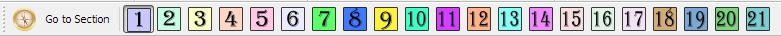

Section - separated sub-area of level, what have his settigs: music, background, physics, etc. Player can move between sections by special points - warps. All sections placed in a single space, and you can see many sections, but you can set settings only for current section.
Each section have his settings:
- Music: on this section will be played selected music
- Custom music file: here you will define custom music file, what allows to use music not from staff list.
- Background: it is a picture, what will be shown in back of this section.
- Connect left-right sides (Level Warp) - all outed offscreen objects will be appeared and entered from opposite side of this section.
- Offscreen exit - allows to player exit from level on go out from screen of this section
- One-way scrolling (No turn back) - allows to move player only to right side. Camera will not be scrolled to left.
- Underwater - apply to total area of current section the underwater physics.
Section swith panel. here you can fastly switch to another section:

If you list in huge level space, you have possible to instant return to left-bottom or left-top current section's corner. On switching between sections, your last position will be saved, and on switching back will be restored in same coordinates.
Section settings toolbox

Copyright © 2014 Platforger Game Engine by Wohlstand project. All rights reserved.